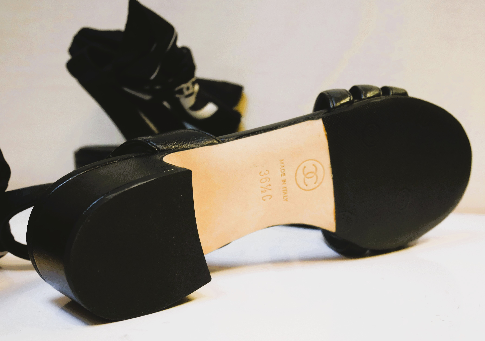
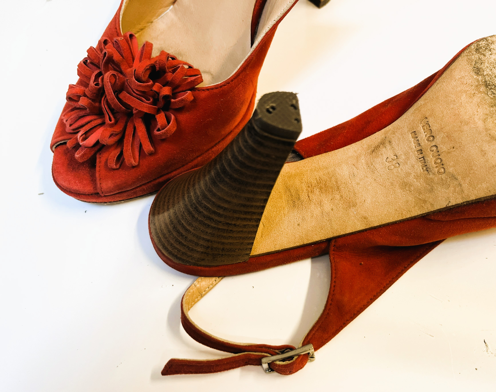
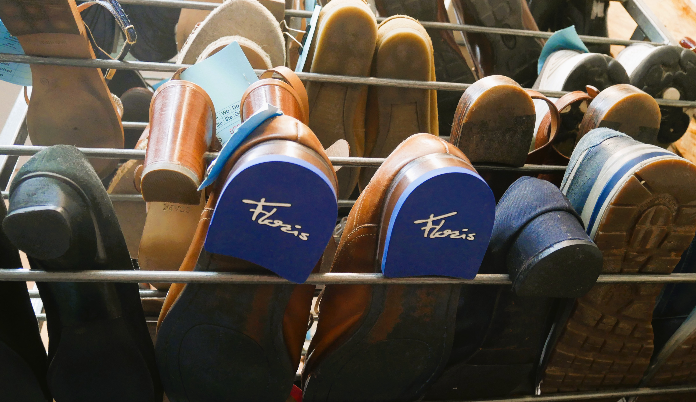
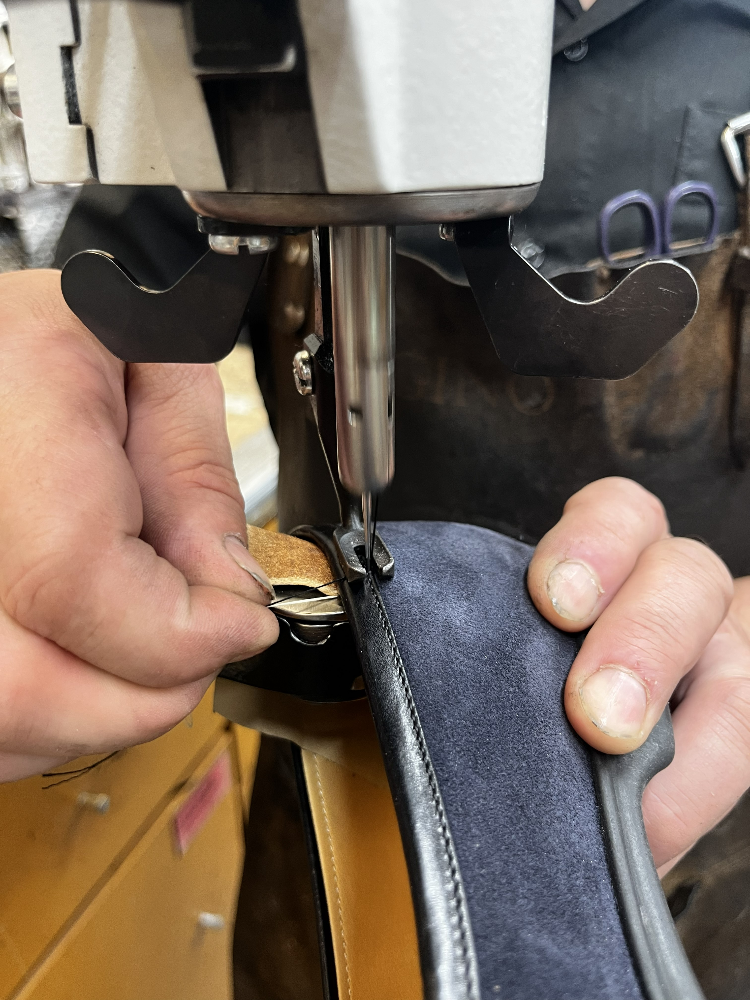
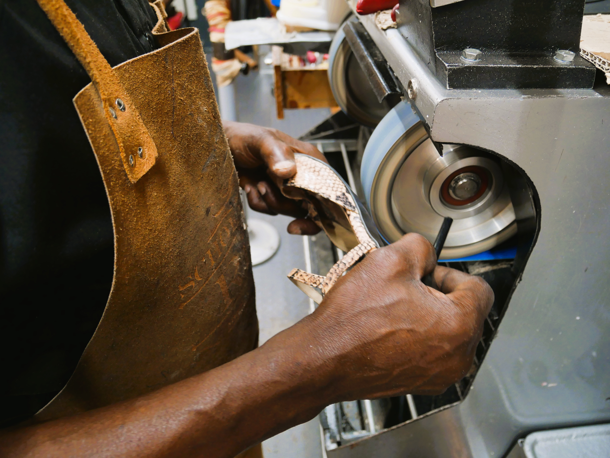
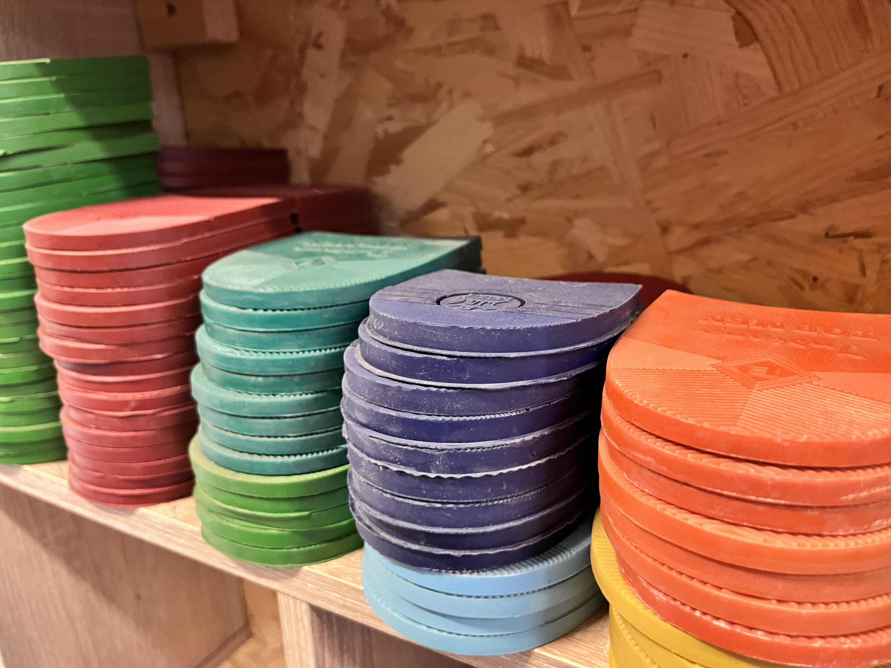
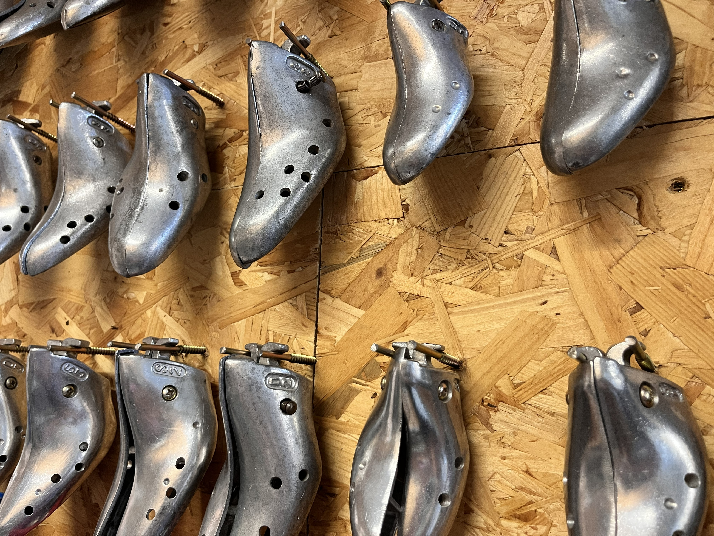

Ons werk in beeld
Galerij
Een greep uit onze herstellingen en materialen.

Herstelling zool en hiel

Opkuisen witte schoen

Herstelling naaldhak sandaal

Schoenen op leesten
+

Afgewerkte schoenen op schoenrek

Voering - stikwerk

Herstelling sandaal aan machine

Rubberen hakken assortiment

Gelooid leer assortiment

Leesten voor uitrekken schoenen